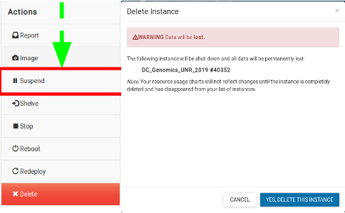

4. Accessing The Atmosphere Cloud¶
Atmosphere, CyVerse’s cloud-computing platform allows you to launch your own isolated virtual machine (VM) image and software, using compute resources such as CyVerse-provided software suites, and pre-configured, frequently used analysis routines, relevant algorithms, and datasets.
To request access to Atmosphere, login to the CyVerse User Portal. In the Services menu under ‘MY SERVICES’ you should see Atmosphere listed as an option you can launch. If not, look uner the Available menu, and click the ‘REQUEST ACCESS’ link. You will receive an email requesting additional information.
- This is the first and last place in these lessons where it will matter if you are using PC, Mac, or Linux. After we connect to our virtual machines built using the same image; we will all be on the same operating system/computing environment.
- CyVerse documentation on how to use Atmosphere resources can be found here
NOTE: WINDOWS users will need to install a UNIX-ready terminal to SSH-login (if you haven’t already). We recommend - mobaxterm home edition
5. Login & Launch Instance¶
- Login to Atmosphere by clicking the “login” button towards the right-upper corner of the screen.

- Fill in your CyVerse username and password and click “LOGIN”

- Select the “Projects” tab and then click the “CREATE NEW PROJECT” button


- Give your Project folder a name (Description is optional). Then click “CREATE”.

- Click on your newly created project and then Click on “NEW” and then “Instance” from the drop-down menu to start up a new virtual machine.

- To select an image click on “Show All” tab and Search for “DCG-UNR-RNAseq” and choose the image created by ‘sateeshp’.

**You will be presented with options to choose and configure your virtual machine here:
+ Instance Name: e.x., "DC Genomics" or you can leave it default which is the image name.
+ Base Image Version: "3.0"
+ Project: select project folder to host the instance
+ Allocation Source: should be your cyverse account
+ Provider: "CyVerse Cloud - Marana"
+ Instance size: We recommend ""medium2" (CPU: 4, Mem: 16GB, Disk: 160GB)"for this tutorial; Though depending on your allocations, choose most suitable one. [Click here](https://wiki.cyverse.org/wiki/display/atmman/Requesting+More+Atmosphere+Resources) to read more about allocations.**

- Launch instance and wait for the build to be deployed (~ 5-10 minutes).
Note: During the build process:scheduling-->building-->spawning-->deploying-->Networking-->N/A; Be patient! Don’t reload!. Once the virtual machine is ready, the “Activity” column will show “N/A” and the “Status” column will turn green and “Active”.

- Navigate back to ‘Projects’ and click on your new instance’s name to see more information related to the instance you just created! and Copy the IP address of your instance created.
Great! We have now built our very own remote virtual machine with all the software pre-installed. Next we will use SSH-Secure-Login to access these remote instances from our laptop’s.
6. SSH Secure-Login¶
- MACOS & LINUX users can open a Terminal window now.
- Windows users start a new session in mobaxterm
- Start a new session; Fill in your “remote host” the IP address of your virtual machine; select “specify username” and enter your cyverse username; Click OK.
- Establish a secure-login to the instance by typing the following:
$ ssh your_cyverseusername@ip_address
- This should log you into CyVerse and you should see a screen like this; Enter ‘yes’ and then enter your CyVerse password.
Your cursor will not move or indicate you are typing as you enter your password. If you make a mistake, hit enter and you will be prompted again.

Success !!! We have established connections with our instances. Proceed to the Tutorial section.
7. Instance Maintenance¶
To end your current session on an Instance and close SSH connection, type ‘exit’
7.1. Atmosphere Dashboard¶

7.2. Suspend Instance¶

Note: It is advisable to delete the machine if you are not planning to use it in future to save valuable resources. However if you want to use it in future, you can suspend it. Notice: IP address changes
7.3. Delete Instance¶
- To completely remove your instance, you can select the “Delete” button from the instance details page.
- This will open up a dialogue window. Select the “Yes, delete this instance” button.
- It may take Atmosphere a few minutes to process your request. The instance should disappear from the project when it has been successfully deleted.

8. Additional Features¶

9. Advanced Topics¶
9.1. Atmosphere Advanced Topics¶
- How do I transfer Data to and from my remote instances on Atmosphere?
- How can I create custom Atmosphere Images for my personal use?
- How can I add ‘ssh-rsa-key’ to Atmosphere for password-less login?